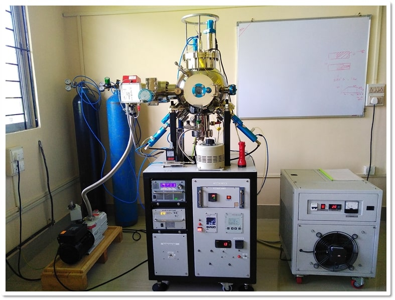
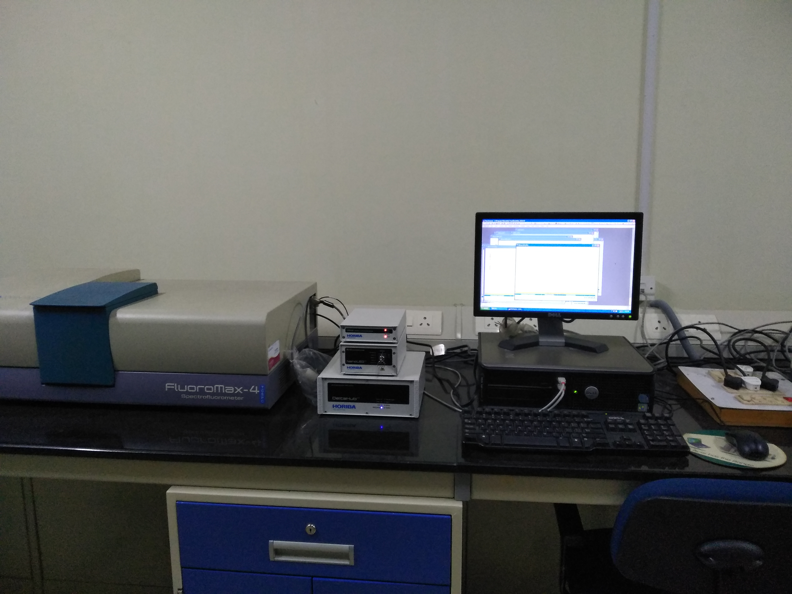
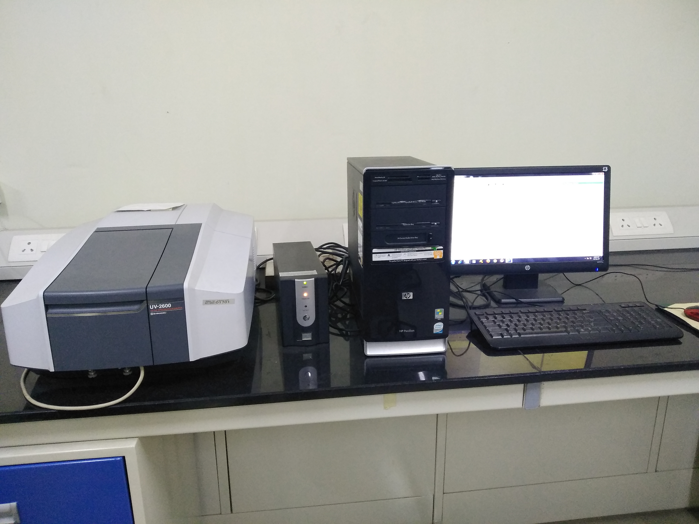
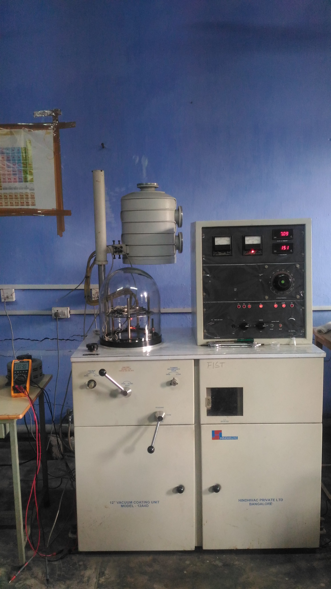

ABOUT THE DEPARTMENT OF PHYSICS
The Department of Physics, Dibrugarh University was established in 1967. It has a rich tradition of teaching and research. The Department aims to provide quality education in Physics both at the undergraduate and postgraduate levels; to create an atmosphere for the creation of new knowledge through methodical research. The Department regularly holds interactions with eminent visitors, national workshops and research seminars.
Currently, the Department offers the following Academic Programmes :
• Five year Integrated M.Sc. in Physics
• Two year M. Sc. in Physics
• M. Phil. in Physics
• Ph. D. in Physics
• Post-Doctoral in Physics
The Department presently has 18 faculty members involved in teaching and research in a number of different research areas. Their research interests are highlighted below:
Condensed Matter Physics (CMP) Group:
The CMP group consists of 8 faculty members (3 Associate Professors, 5 Assistant Professors) of the department and their students. The experimental group is working on sol-gel glasses for optical applications, thin film solar cells, gas sensors, production and study of metal and semiconductor nano-particles for gas sensing and optical applications.
The research interest of the theoretical CMP group lies in the application of density functional theory (DFT) method in order to study structural, electronic, magnetic, optical and catalytic properties of various nanomaterials. The group has undertaken the following research problems on DFT study of (a)The nature of molecular hydrogen adsorption on alkali metal clusters, (b) Graphene Quantum Dots as toxic metal ion sensors and (c) Optoelectronic application of graphene based systems. Another important research work carried out by theoretical CMP group is related to superconducting heterostructures and spintronics based devices.
Astrophysics, Cosmology and High Energy Physics Group:
The group consists of 8 faculty members (1 Professor, 1 Associate Professor, 6 Assistant Professors) of the department and their students. Presently the group is involved in the areas of Gamma-Ray Astronomy (GRA), Gravitational Wave Astrophysics (GWA), Astrophysics, Cosmology and High Energy Physics . The GRA work is basically related with gamma-hardon separation techniques of gamma-ray experiments, the GWA work is related with the study of properties of gravitational waves in modified theories of gravity. In Astrophysics, the work is related with study of dark matter and compact star's oscillations. Cosmology work is based on supersymmetric hybrid inflation as well as on understanding of dark energy from the aspects of modified gravity and scalar field models. Another work is related to computer simulation and study of Extensive air showers initiated by Very high energy gamma rays from astrophysical sources. In HEP, a research work is going on in neutrino physics focusing on the theoretical study of neutrino mass and mixing modeling. Holographic studies on the gravitational systems using AdS CFT techniques have been carried out in a number of works.
Atmospheric Sciences Group:
The group consists of 3 faculty members (1 Professor, 2 Assistant Professors) of the department. and their students. The group is working on study of ionospheric error and correction for the satellite based navigation systems like IRNSS. It operates two ionosondes and four GPS/GNSS receiver chain in the low latitude region of NE India. It has developed an indigenous ionosonde in collaboration with SAMEER, Mumbai. Through observational as well as modeling study of the Equatorial Ionization Anomaly and its effect such L band scintillations, the group is actively contributing to the ISRO’ space science program and receives funding though RESPOND program. Using the regional climate model the group is studying extensively for the chemical atmosphere over South and South East Asia. The group is involved in developing in house model for ion-electron density and temperature to study dynamics of the low latitude ionosphere. The group is also working on 'Modeling the impact of aerosols/gases on regional climate and weather extremes over Sub Himalayan North Eastern Region” under the National Network Programme on Human and Institutional Capacity Building (HICAB).
Electronics Group:
The group consists of 3 faculty members (3 Assistant Professors) of the department and their students. The group is presently working on various antenna designs such as microstrip antenna, MIMO antenna, glass plate antenna etc. The focus of the research work is to design ultra wideband, compact and high gain antennas. The research interest also lies in the observation of the shift in resonant frequency due to covering of the radiation patch of the antenna by liquids of different dielectric constants. The group is exclusively using the simulation software e.g. Ansoft HFSS, CST microwave studio etc. The research group is also involved in the development of different algorithms/program codes based on soft computing techniques to optimize the basic antenna parameters.
Photo Gallery



